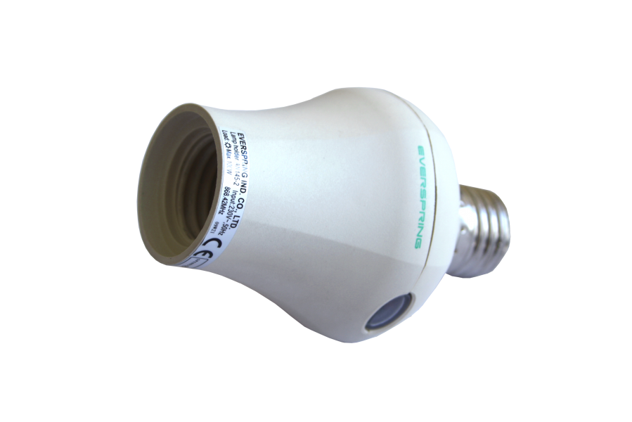

EVR_AN145
Firmware Version : 0.1 |
 |
KurzinfoDrehen Sie das Gerät in einen E27 Lampen Sockel und drehen die Lampe einfach in das Gerät. Inklusion und Exklusion werden durch einfaches Drücken der Taste am Gerät bestätigt. Weitergehende Informationen finden sich in den jeweiligen Abschnitten dieses Handbuches. |
Produktbeschreibung
Der Everspring Lampenhalter ermöglicht die ON-/ OFF-Steuerung von Lampen sowohl manuell durch Drücken der lokalen Taste am Gerät als auch über Funk. Er wird direkt in die vorhandene Halterung geschraubt. Diese einfache Handhabung macht den Everspring EVR_AN145 zu einer guten Alternative der Z-Wave Lichtsteuerung. Nachdem das Gerät in das Z-Wave Netzwerk des Controllers inkludiert wurde, kann die Lampe durch jedes mit dem Lampenhalter assoziierte Gerät ein- und ausgeschaltet werden. Dieser Lampenhalter ist geeignet für 100W Glühlampen und Energiesparlampen mit einer max. Leistung von 27W.
Installationsanleitung
Das Gerät passt in jeden E27 Lampen Sockel. Platzieren Sie das Gerät nicht im direkten Sonnenlicht und an feuchten oder staubigen Plätzen. Die geeignete Arbeitstemperatur liegt zwischen 0°C bis 40°C.
Verhalten des Gerätes im Z-Wave Netz
I Im Auslieferungszustand ist das Gerät mit keinem Z-Wave-Netz verbunden. Damit es mit anderen Z-Wave Geräten kommunizieren kann, muss es in ein bestehendes Z-Wave Netz eingebunden werden. Dieser Prozess wird bei Z-Wave Inklusion genannt. Geräte können Netzwerke auch wieder verlassen. Dieser Prozess heißt bei Z-Wave Exklusion. Beide Prozesse werden von einem Controller gestartet, der dazu in einen Inklusion- bzw. Exklusion-Modus geschaltet werden muss. Das Handbuch des Controllers enthält Informationen, wie er in diese Modi zu schalten ist. Erst wenn der Controller des Z-Wave Netzes im Inclusion-Modus ist, können Geräte hinzugefügt werden. Das Verlassen des Netzes durch Exklusion führt zum Rücksetzen dieses Gerätes in den Auslieferungszustand.
Inklusion und Exklusion werden durch einfaches Drücken der Taste am Gerät bestätigt.
Bedienung des Gerätes
Das Gerät kann eine Lampe bis 100W Leistung schalten. Die elektrische Last kann per Funk oder mittels des lokalen Schalter am Gerät geschaltet werden. Eine LED in dem Schalter am Gerät zeigt den Schaltzustand des Gerätes an.
Assoziationen - wie werden andere Geräte gesteuert?
A Z-Wave Geräte können andere Geräte direkt steuern. Diese direkte Steuerung heißt in Z-Wave Assoziation. In den steuernden Geräten muss dazu die Geräte-ID des zu steuernden Gerätes hinterlegt werden. Dies erfolgt in sogenannten Assoziationsgruppen. Eine Assoziationsgruppe ist immer an ein Ereignis im steuernden Gerät gebunden (Tastendruck oder Auslösen eines Sensors). Bei Eintritt dieses Ereignisses wird an alle in einer Assoziationsgruppe hinterlegten Geräte ein Steuerkommando gesendet.
Assoziationsgruppen:
| 1 | Geräte, die bei Alarm informiert werden (max. Anzahl Geräte: 5) |
Technische Daten
| Stromversorgung | 230V ~50-60 Hz |
| Schaltbare Lasten | schaltet bis zu 100 W |
| Schutzklasse | 20 |
| Explorer Frames | Nein |
| SDK | 4.24 |
| Geräteart | Slave |
| Allgemeiner Z-Wave-Gerätetyp | Binary Switch |
| Spezieller Z-Wave-Gerätetyp | Binary Power Switch |
| Router | Ja |
| FLiRS | Nein |
| Firmware Version | 0.1 |